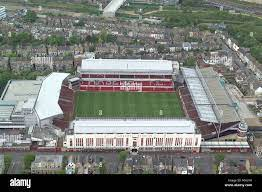

STADUIMS
Playing Ground History
Highbury stadium was opened in 1939, at the culmination of the most successful three-year period in the club's history, having completed a hat-trick of Lancashire Combination Cup wins. Until then the club had played on a ground next to the North Euston Hotel. After the club moved to their new stadium upon the conclusion of the 2005–2006 season, Highbury was redeveloped as a residential development known as Highbury Square, with the Clock End and North Bank stands being demolished; parts of the East and West Stands remained and were incorporated into the new development due ...
The Relocation began in 2002, but financial difficulties delayed work until February 2004. Emirates was later announced as the main sponsor for the stadium. The entire stadium project was completed in 2006 at a cost of £390 million. The club's former stadium was redeveloped as Highbury Square, an apartment complex.
|  | .jpg) |
| Highbury | Emirates |